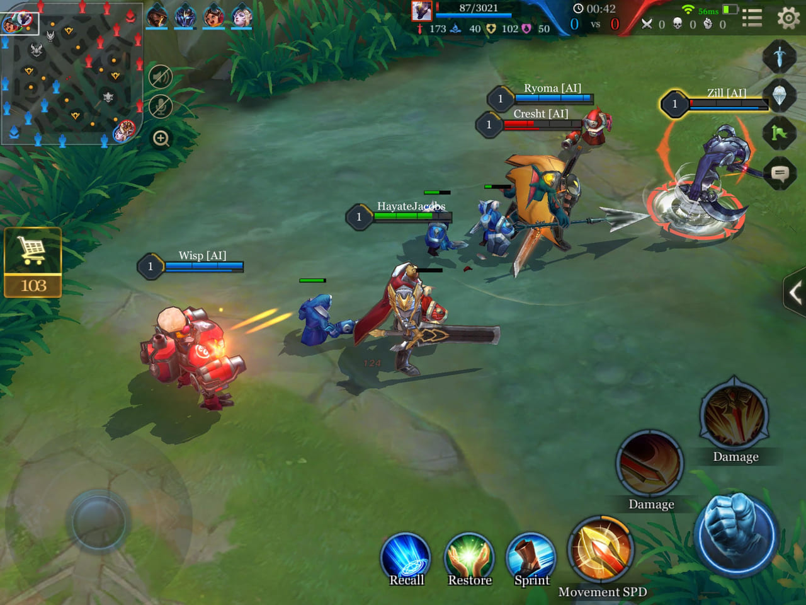

Experience Arena of Valor , an epic new 5v5 multiplayer online battle arena (MOBA) designed by Tencent Games!
AoV is a mobile Multiplayer Online Battle Arena (MOBA) game, one of the most popular game types in the world. Like in other popular MOBAs, the goal is to destroy your opponent’s main structure, called the Core in Arena of Valor. Standing in the way of the core are nine towers - three per lane - that players must destroy to advance into the opponent’s side of the map.
Teams are usually composed of five players, though other modes with fewer players are playable. A standard team composition consists of at least one character that can absorb/block damage, one character that can deal damage, and one character that can heal allies (or at least prevent them from taking damage).
Minions regularly appear and march toward the enemy in each lane. Players gain experience and gold by standing near them when they die and can earn more gold by delivering the killing blow, or “last-hitting.” In addition, minions are often needed to absorb tower damage if you want to take out an opposing tower, so eliminating opposing minions is an important part of the game.
Finally, there are a multitude of monsters of various strength scattered throughout the map. Destroying these monsters grant you and/or your team gold, experience, and occasionally other advantages. The process of specifically farming resources in this fashion is referred to as “jungling.”

Unraveling the World of Gaming
In which country Arena of Valor is popular?
Arena of Valor, also known as Honor of Kings to Chinese audiences, is a widely popular esports title within SEA and China. In China, the game has its own franchised esports league, the King Pro League, that features the likes of Premier League football club Wolves and Chinese LPL franchise RNG, among others.